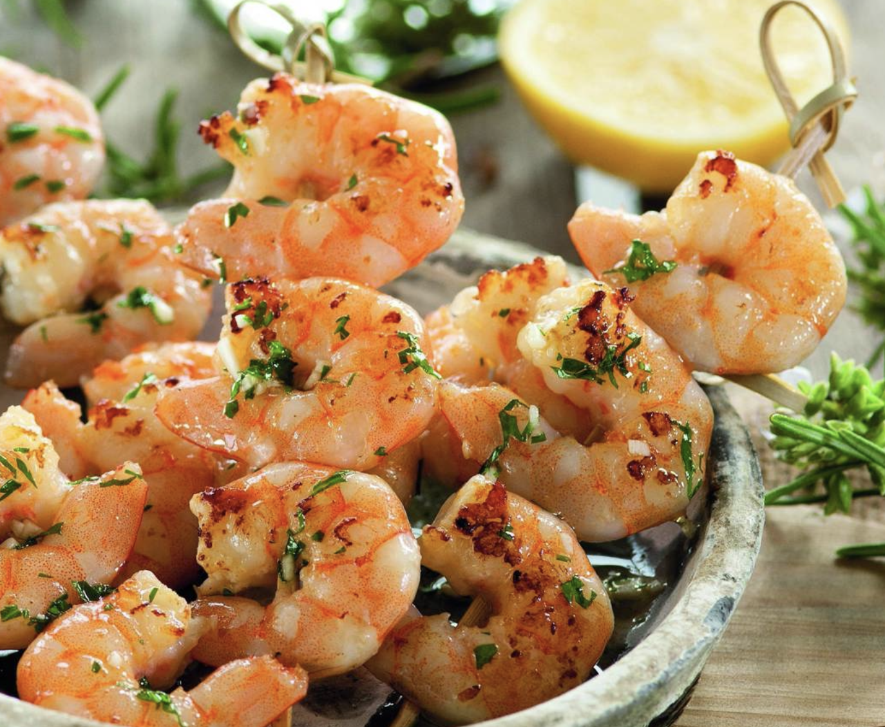

Brochetas de camarones
Nuestra receta sobrevivir a mi pareja ayudara a mostrarle tu pareja que tienes idea de eso que llaman cocinar (tu familia ya sabe que no cocinas, pero tu pareja no necesita saber eso).
Nota:Bajo mi experciencia, te recomiendo que lo sorprendas con una cita de "vamos a cocinar juntos" que con un "ya cocine por los dos".

Ingredientes
- 1 docena de camarones frescos
- 8 brochetas de unos 15 cm
- Aceite, 1 ajo, perejil y sal
Pasos a seguir
Paso 1
- Limpie los camarones, retirando la cabeza y la piel. Después, ensarte tres camarones en cada una de las brochetas.
Paso 2
- Limpie el perejil y piquelo bien fino. Pele y pique el ajo muy pequeño. En un vaso eche 8 cucharadas de aceite junto con el ajo picado y una cucharada de perejil picado. Mezcle bien y reserve.
Paso 3
- A continuación, ponga un sarten a fuego medio-fuerte con un pellizco de sal y una cucharada de aceite y coloque las brochetas. Fríe 2 minutos por cada lado y retire.
Paso 5
- Sirva caliente y con el aceite de ajo y perejil reservado aplique sobre las brochetas.